هوش مصنوعي
خانه
منابع درس
رئوس مطالب کلاس درس

هوش مصنوعي - ترم اول 99
رئوس مطالب
منابع درسی
كتاب زير به عنوان منبع اصلي اين درس مورد استفاده قرار خواهد گرفت:
هوش مصنوعي: رهيافتي نوين
رئوس مطالب کلاس درس
شماره جلسه
تاریخ
موضوع درس
دانلود محتویات
جلسه اول
شنبه 22 شهريور
مقدمه و معرفي
[فونت های مورد نیاز]
[Slides.ppt]
[Slides.pdf]
[ويدئو: معرفي درس]
[ويدئو: تعريف هوش مصنوعي]
[ويدئو: تاريخچه هوش مصنوعي]
[ويدئو: جايگاه فعلي هوش مصنوعي]
[ويدئو: درك مفهوم عامل]
جلسه دوم
شنبه 29 شهريور
جستجو-بخش اول
[Slides.ppt]
[Slides.pdf]
[ويدئو: مقدمه و معرفی عامل های برنامه ریز]
[ويدئو: معرفی مسئله جستجو]
[ويدئو: مثالهایی برای مسئله جستجو]
[ويدئو: گراف فضای حالت و درخت جستجو]
[ويدئو: پیاده سازی درخت جستجو]
[ويدئو: الگوریتم کلی جستجو]
[ويدئو: استراتژی جستجوی عمق اول]
[ويدئو: ارزیابی استراتژی جستجوی عمق اول]
جلسه سوم
شنبه 5 مهر
جستجو-بخش دوم
[Slides.ppt]
[Slides.pdf]
[ويدئو: خلاصه جلسه قبل و مقدمه]
[ويدئو: استراتژی جستجوی سطح اول]
[ويدئو: استراتژی جستجوی هزینه یکنواخت]
[ويدئو: استراتژی جستجوی عمیق سازی تکراری]
[ويدئو: جستجوی آگاهانه و تابع ابتکاری]
[ويدئو: استراتژی جستجوی حریصانه]
جلسه چهارم
شنبه 12 مهر
جستجو-بخش سوم
[Slides.ppt]
[Slides.pdf]
[ويدئو: مقدمه و خلاصه الگوریتم های جستجو]
[ويدئو: استراتژی جستجوی A*: معرفی و مثال]
[ويدئو: توابع ابتکاری تصدیق پذیر]
[ويدئو: بهینگی الگوریتم A*]
[ويدئو: طراحی توابع تصدیق پذیر]